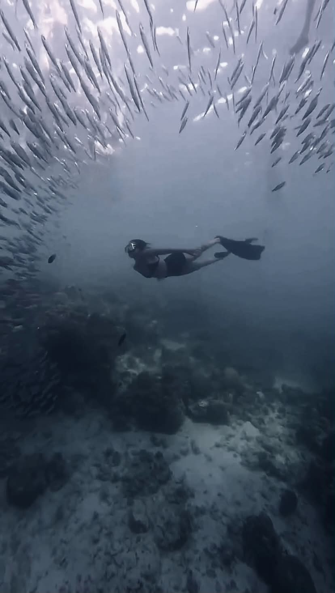
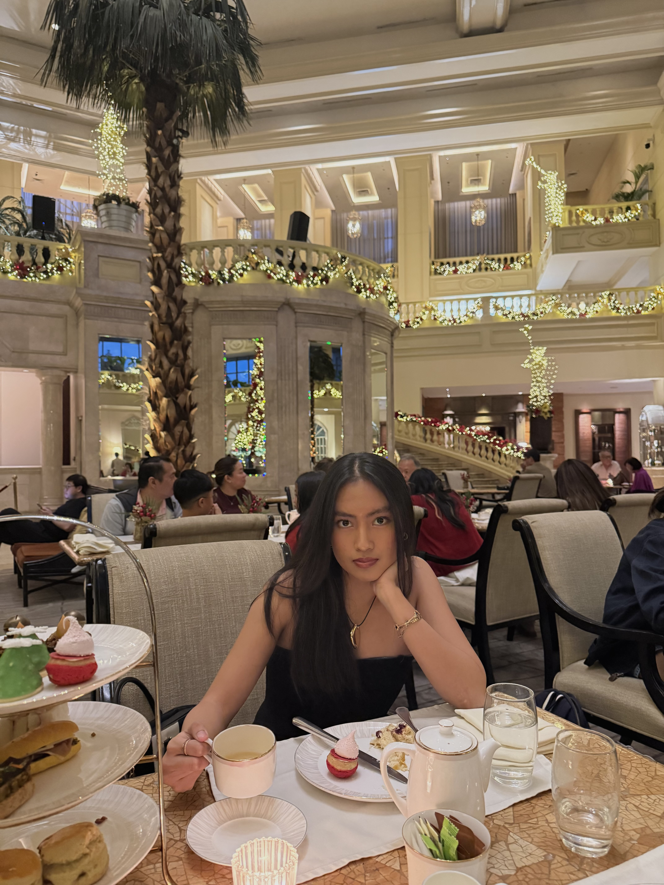

Maurienne Marie Mojica
Cybersecurity Software Development Computer Networks
BS Computer Science - Major in Network and Information Security Minor in ICT for Business Agility at De La Salle University - Manila
What I do
-
Cybersecurity
Vulnerability assessment and penetration testing fundamentals: network reconnaissance with Nmap, web application security testing with Burp Suite, and findings scored with CVSS v3.1. On the defensive side: secure coding, input validation, and authentication and session security.
-
Software Development
Full-stack web development with React, Astro, Node.js, and Express, exposing REST APIs over MySQL and MongoDB, built under a secure SDLC with Git/GitHub. Data analysis with pandas and NumPy, and low-level programming in C and x86-64 assembly.
-
Computer Networks
Protocol-level understanding of TCP/IP, UDP, and ICMP: packet analysis in Wireshark, socket programming, and protocol design. I build and test in Linux and Ubuntu virtual machines on VirtualBox and VMware.
About Me
I’m a driven Computer Science undergraduate at De La Salle University - Manila with a growing interest in Networking, Cybersecurity and Frontend Development. I enjoy building, exploring how systems work, and solving technical problems while continuously learning new technologies. I’m adaptable, collaborative, and motivated by challenges that allow me to grow both technically and personally.
Outside of tech, I enjoy traveling, food trips, outdoor activities, driving, music, and sports. These interests keep me curious, active, and open to new experiences.


Projects
-
A dashboard that turns raw sales data into weekly reports for a small retail team. Cut their reporting time from a day to ten minutes.
-
A booking site for a local studio with online payments and automatic email reminders.
-
An open-source command line tool that checks a site for broken links and missing alt text.
-
A recipe app that scales ingredients and works offline in the kitchen.
Certifications & Achievements
Certification
Certification Name
What it covers and the skills it proves, in one or two lines.
View credentialAchievement
Achievement or Award Title
What you did and why it mattered, in one or two lines.
See detailsCertification
Another Certification
What it covers and the skills it proves, in one or two lines.
View credentialExperiences
-
September 2026 to Present
Associate Vice President - University Relations
Lasalle Computer Society Manila, Philippines
- Coordinate with university offices and external stakeholders to support organizational partnerships, communications, and initiatives.
- Facilitate collaboration between LSCS and university communities to strengthen engagement and professional relationships.
-
July 2026
First Capture the Flag
Advanced and Offensive Security
- Participated in my first Capture the Flag (CTF) competition, working as part of a team to solve 20 cybersecurity challenges under a time limit.
- The competition involved applying concepts from my Advanced and Offensive Security coursework while balancing the event alongside ongoing academic requirements.
- It was a hands-on experience that strengthened my problem-solving, teamwork, and cybersecurity skills.
-
March 2026 to September 2026
First Timer - Operations and Finance
Lasallian Ambassadors Manila, Philippines
- Assist in the planning and execution of campus events, tours, orientations, and university activities.
- Support event operations through ingress and egress permit processing, logistics coordination, budgeting assistance, and other organizational preparations.
- Coordinate with fellow ambassadors and committee members to manage on-site operations and ensure smooth and efficient event execution.
-
September 2025 to July 2026
Junior Officer
Lasalle Computer Society Manila, Philippines
- Support the planning and execution of society activities and events by coordinating with members and assisting with logistical and organizational tasks.
- Spearheaded the Program Design Committee for “Macky vs Malware: Building Cyber-Resilient Lasallians,” collaborating with fellow junior officers to develop the seminar’s program structure, activities, and overall flow.
-
2022 to 2024
Member
UST-SHS STEM Society Manila, Philippines
- Participated in organizing society activities and events, assisting with event preparation, coordination, and communication among members.
- Collaborated with fellow members in supporting STEM-related initiatives and student activities.
Contact
Have a project in mind? Send me a note and I'll reply within two working days.
maurienne7607@gmail.com